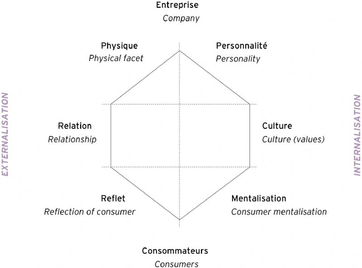

Sémiotique
triangle :
Forme
/\
/ \
/ \
Fonction /______\ Symbole
une chaise (forme)
=> fonction principale : s'asseoire
=> symbole : une chaise de classe
triangle :
Forme
/\
/ \
/ \
Fonction /______\ Symbole
Prisme d'identité de la marque (Prisme de Kapferer)

Différence entre ce qu'on pense et ce que les autres perçoivent
KISS Keep It Simple & Stupid